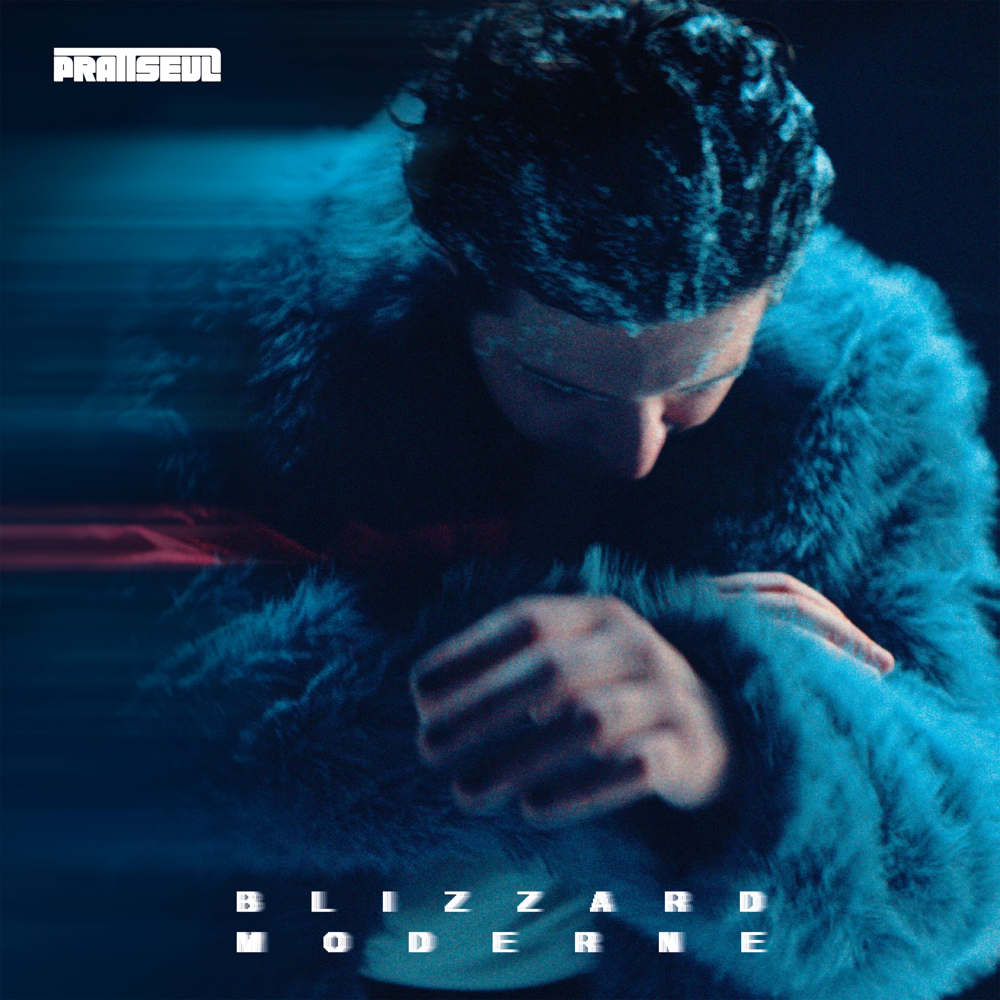
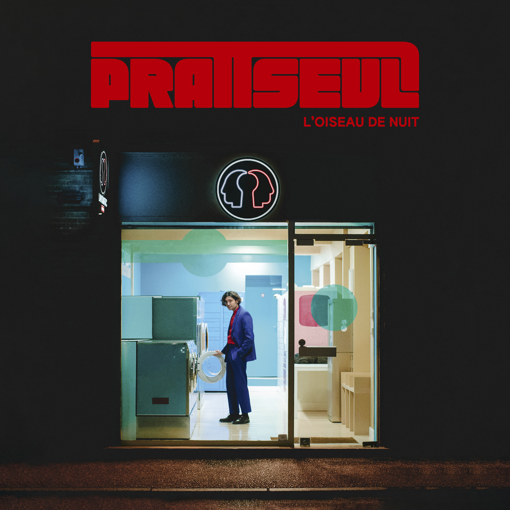
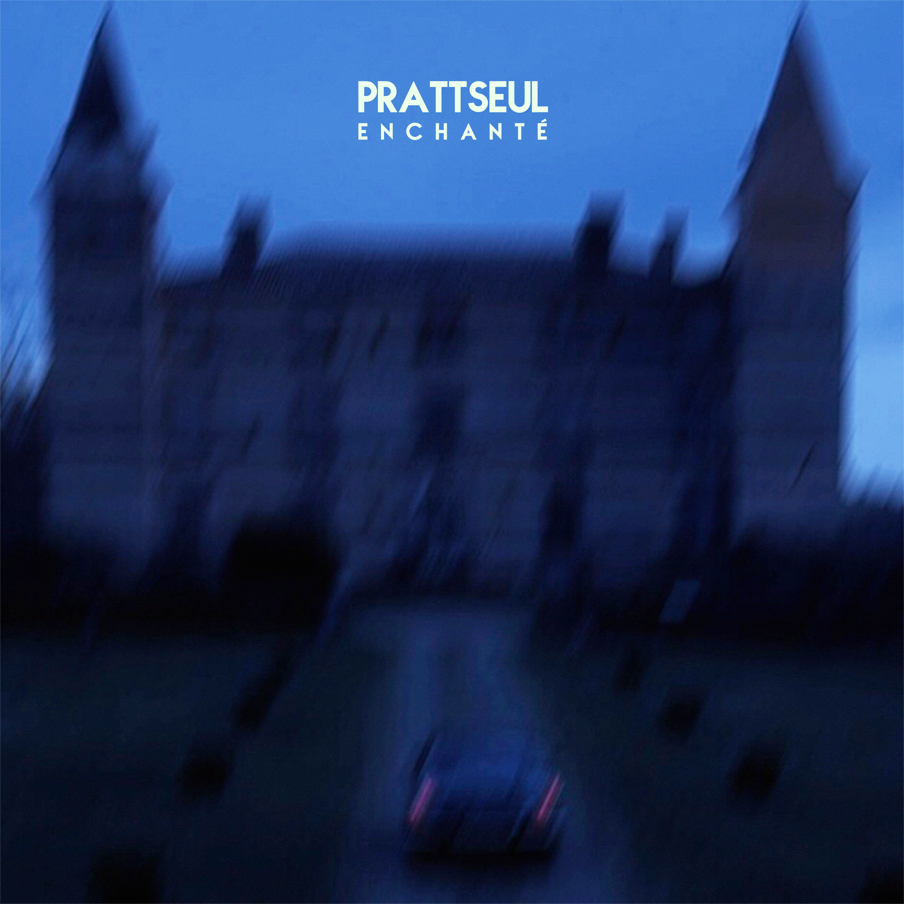

Prattseul - Biographie
.jpg)
Quel est le point commun entre le rock instinctif de Arctic Monkeys, l’univers de Tim Burton, la GameBoy Color, l’aéronautique et l’impertinence de Bashung ? Tout se retrouve autour du premier album de Prattseul : instinctif et fédérateur, pensé comme un conte rock et groovy, une sorte de quête initiatique qui nous emmène dans les hauteurs du monde — et de tout ce qu’il peut avoir de beau et vertigineux à la fois. Derrière Prattseul, il y a Simon Tirel, un rêveur romantique originaire de Castres qui a claqué la porte de son travail d’ingénieur en aéronautique pour faire sonner le rock en français, faire danser le spleen et rendre possible un imaginaire fantastique . Petit-fils d’un grand-père trompettiste, violoniste et pianiste, Prattseul a grandi avec son amour des BDs, de la guitare et les enceintes qui faisaient sonner aussi bien Gainsbourg que Nino Ferrer.
Après un premier EP L’oiseau de nuit et des premières parties de Dionysos, il revient avec Blizzard Moderne, un premier album à la croisée de Cage The Elephant pour l’énergie, Kevin Morby pour la rêverie et Francis Cabrel pour la poésie. Cet album, réalisé par Lionnel Buzac (Bandit Bandit, Chien Noir), avec Julien Barbagallo (Tame Impala) à la batterie et Marie Pieprzownik au mastering, est une réponse poétique et déjantée à la mélancolie et aux contradictions de l’existence . Avec une touche de surréalisme et beaucoup de fantaisie, Blizzard Moderne est l’album d’un homme qui use des ondes pour contrer le monde.
Un album dont vous êtes le héros
Construit comme une épopée, Blizzard Moderne suit le destin de Prattseul, un personnage imaginaire (vraiment ?), contraint de ne plus seulement regarder l’humanité depuis sa tour : « que se cache-t-il dans les failles au fond dans l’obscurité ? » se demande-t-il dans Dogface, inspiré d’un personnage hermite et solitaire de la série de romans de William Nicholson, Le Vent de feu. Un monde à rencontrer et à apprivoiser mais où les couleurs vues d’en haut correspondent malheureusement à celles d’en bas — grises et menaçantes : « je prends des claques chaque quart d’heure / par les gens modernes dans le blizzard envahisseur » , chante-t-il dans Blizzard Moderne. Mais si le monde est farouche et périlleux, avec ce premier album de Prattseul, il a aussi quelque chose de lumineux. Dans Blizzard Moderne, Prattseul narre aussi bien les affres du monde que sa beauté. Son album convoque aussi bien la maladie d’Alzheimer que la mélancolie, l’énergie de Gorillaz à celle de Fontaines DC. À travers ces dix titres, Prattseul nous parle autant de l’indifférence que de la bienveillance, des insomnies comme des amours choisies.
À 32 ans, en véritable entrepreneur, Simon Tirel écrit, compose et pense sa direction artistique en totale liberté. Sa mission ? Proposer avec Blizzard Moderne un voyage initiatique abrasif mais salvateur. Pour l’accompagner, ce féru de GameBoy a même développé un jeu vidéo à vivre comme un clip pour suivre les obstacles comme les réjouissances de Prattseul. Comme si le temps d’un instant (d’un album !), nous pouvions sauvegarder un peu notre vécu et nos émotions, avoir les manettes de notre quête. Car si nous sommes toutes et tous à la recherche d’un monde meilleur, quoi de mieux que de le faire ensemble et en musique ?
Biographie écrite par Angèle Chatelier
Discographie

Blizzard moderne

L’oiseau de nuit
